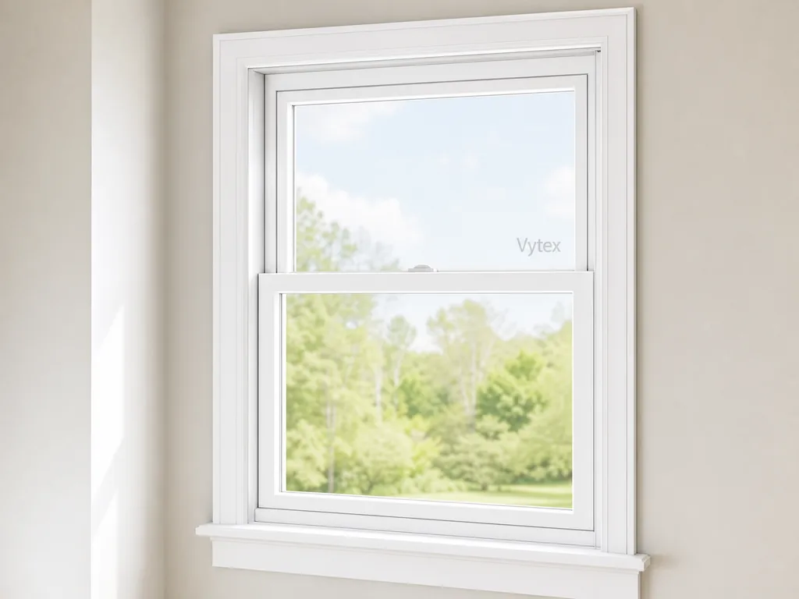
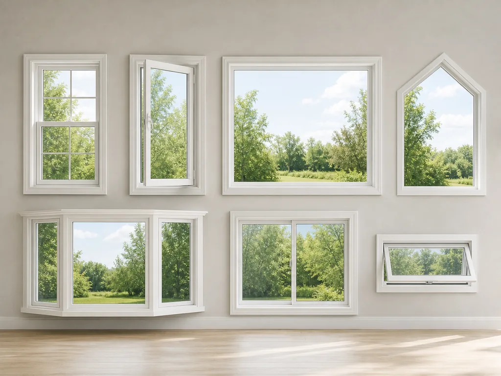

Meet Our Windows
Our Window Supplier: Vytex
Windofy works with Vytex to offer replacement windows built for comfort, efficiency, and everyday performance.
This overview focuses only on windows, so homeowners can compare the main window lines and styles without sorting through unrelated products.
For more about the manufacturer, visit the official Vytex website .

Vytex Window Lines
A simple look at the main Vytex window options Windofy can help you explore.
Potomac Coastal
A performance-focused window line for homes that need added strength in coastal or storm-prone conditions. It is suited for homeowners who want everyday comfort with extra protection from demanding weather.
Potomac-hp
A high-performance line designed for homeowners who place a priority on energy efficiency, tight operation, and long-term comfort. It is a strong fit for full-home window replacement projects.
Fortis
A balanced window line that combines durability, insulation, and clean operation. Fortis works well for homeowners who want dependable replacement windows with strong day-to-day performance.
Georgetown
A practical window line focused on dependable value. Georgetown is a good option for straightforward replacements where homeowners want reliable comfort, function, and weather protection.
Bay & Bow Windows
Projection windows that extend outward from the home to bring in more light, create wider views, and add a sense of space. They are often used in living rooms, dining rooms, and front-facing rooms.
Specialty Windows
Fixed or shaped windows used when a standard rectangle is not the best fit. Specialty windows can add natural light to unique wall spaces, accent architectural features, or complete a larger window layout.
Common Window Types
Vytex product lines may include several familiar window styles, depending on the project and opening.
Double-Hung
Two sashes slide vertically, making this a flexible choice for bedrooms, living rooms, and many traditional home layouts.
Sliding
One or more panels move side to side, which works well for wide openings and spaces where an outward-swinging window is not ideal.
Casement
Hinged windows open outward with a crank, helping direct fresh air into the room and giving homeowners a clear glass view.
Picture
A fixed window that does not open, commonly used where the goal is natural light, an open view, or a clean center window in a larger layout.
Awning & Hopper
Compact hinged windows often used in smaller spaces. Awning windows open outward from the bottom, while hopper windows tilt inward from the top.
Bay, Bow & Specialty
Design-focused window types for adding light, shape, or depth. They are useful for feature areas where the window becomes part of the room's character.
Choosing the Right Fit
The right window depends on how each room is used, how much ventilation you want, the size of the opening, and the level of performance your home needs.
Windofy can help you compare practical options, understand what fits your project, and request a clear quote without an in-home sales appointment.
Compare Styles
Match window operation to the room and opening.
Get a Quote
Share photos and receive transparent guidance.
